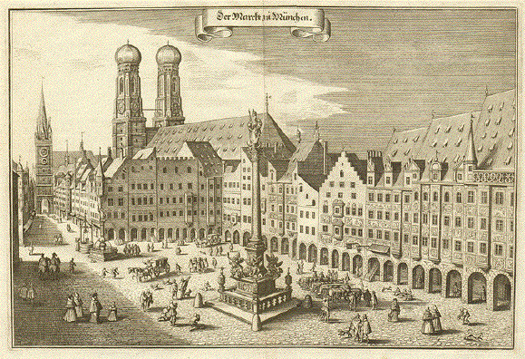

When Bavaria was reunited in 1506 after a brief war against the Duchy of Landshut, Munich became its capital. The arts and politics became increasingly influenced by the court (see Orlando di Lasso and Heinrich Schütz). During the 16th century, Munich was a centre of the German counter reformation, and also of renaissance arts. Duke Wilhelm V commissioned the Jesuit Michaelskirche, which became a centre for the counter-reformation, and also built the Hofbräuhaus for brewing brown beer in 1589. The Catholic League was founded in Munich in 1609.
In 1623, during the Thirty Years' War, Munich became an electoral residence when Maximilian I, Duke of Bavaria was invested with the electoral dignity, but in 1632 the city was occupied by Gustav II Adolph of Sweden. When the bubonic plague broke out in 1634 and 1635, about one-third of the population died. Under the regency of the Bavarian electors, Munich was an important centre of Baroque life, but also had to suffer under Habsburg occupations in 1704 and 1742.
After making an alliance with Napoleonic France, the city became the capital of the new Kingdom of Bavaria in 1806 with Elector Maximillian Joseph becoming its first King. The state parliament (the Landtag) and the new archdiocese of Munich and Freising were also located in the city.
During the early to mid-19th century, the old fortified city walls of Munich were largely demolished due to population expansion.
Munich's annual Beer Festival, Oktoberfest, has its origins from a royal wedding in October 1810. The fields are now part of the 'Theresienwiese' near downtown.
In 1826, Landshut University was moved to Munich. Many of the city's finest buildings belong to this period and were built under the first three Bavarian kings. Especially Ludwig I rendered outstanding services to Munich's status as a centre of the arts, attracting numerous artists and enhancing the city's architectural substance with grand boulevards and buildings.
The first Munich railway station was built in 1839, with a line going to Augsburg in the west. By 1849 a newer Munich Central Train Station (München Hauptbahnhof) was completed, with a line going to Landshut and Regensburg in the north.
By the time Ludwig II became king in 1864, he remained mostly aloof from his capital and focused more on his fanciful castles in the Bavarian countryside, which is why he is known the world over as the 'fairytale king'. Nevertheless, his patronage of Richard Wagner secured his posthumous reputation, as do his castles, which still generate significant tourist income for Bavaria. Later, Prince Regent Luitpold's years as regent were marked by tremendous artistic and cultural activity in Munich, enhancing its status as a cultural force of global importance (see Franz von Stuck and Der Blaue Reiter).